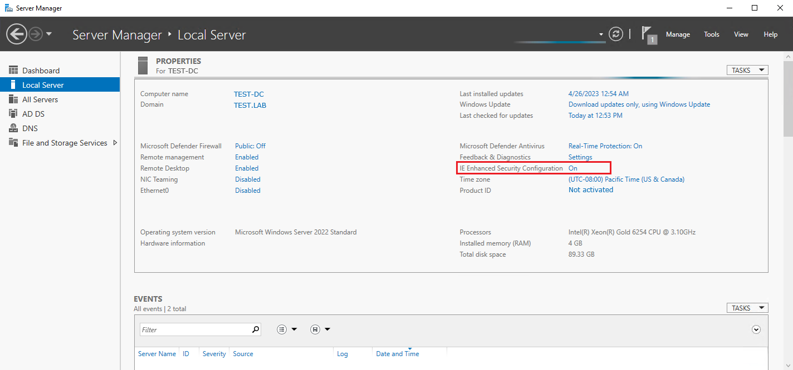
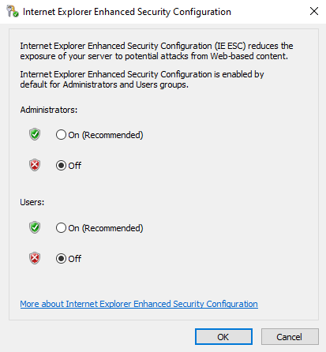

Symptom
You've encountered the following error:
HTTP Error 401 - Unauthorized. Provide another credentials or change security settings in Internet Explorer.
Causes
-
Misconfigured Internet Explorer security settings.
-
IE Enhanced Security Configuration enabled on the SQL Server end.
-
Incorrect SSRS account permissions.
-
SSRS account is included in the Protected Users security group.
-
Your SQL Server is not added to the Local Intranet group as a trusted host.
-
You account has insufficient permissions to access the Report Server.
IMPORTANT: Unless configured otherwise, SQL Server Reporting Services require NTLM authentication to be enabled to operate. Learn more in Configure Windows Authentication on the Report Server ⸱ Microsoft 🡥.
Resolutions
-
Review the Internet Explorer security settings.
-
In the affected server, proceed to Control Panel and select Internet Options. Alternatively, type Internet Options in the Search bar.
-
Select the Security tab, select the Internet zone, and click Custom level.
-
Locate the User Authentication subnode, and select the Automatic logon with current user name and password option. Click OK to save the changes.
-
-
Disable IE Enhanced Security Configuration.
-
Launch Server Manager.
-
In the left pane, click Local server.
-
Click On to the right from IE Enhanced Security Configuration.
 -
In the configuration window, switch both Administrators and Users categories to Off.
-
Click OK to save changes.

-
-
Review your SSRS account permissions. For additional information, refer to the following article: SQL Server Reporting Services: Configure SSRS Account · v10.6 .
-
Remove the SSRS account from the Protected Users security group. Learn more on Protected Users in Protected Users Security Group ⸱ Microsoft 🡥.
-
Add your SQL Server to the Local Intranet group locally on every server used to access SSRS reports via Netwrix Auditor administrative console. If setting at GPO level, the settings should be Level 1.
-
In the Run command, open
inetcpl.cpl. -
In the Security tab, select the Local intranet zone and click the Sites button.
-
Click the Advanced button and enter the SQL Server address to add it to the Local Intranet zone.
-
-
Make sure your account has the Browser role assigned.
-
Log in the Report Manager under the administrator account.
-
Click the three horizontal dots menu for the Netwrix Auditor reports folder and click Manage.
-
In the left pane, select Security, and either click Edit next to the corresponding user to select a different role or add a new user by clicking Add group or user.
-
Once you've assigned the Browser role to the account, save the changes and try accessing the reports logged in under your usual account.
-
-
Rebuild the Reports folder.
-
In elevated PowerShell, execute the following command to stop the corresponding service:
Stop-Service -DisplayName "Netwrix Auditor Management Service" -
Open Report Manager in your browser.
-
You can find the Report Manager URL in your main Netwrix Auditor menu > Settings > Audit Database tab > Report Manager URL.
-
-
In the main SQL Server Reporting Services window, locate the Netwrix Auditor folder.
-
Click the meatball ⸱⸱⸱ button, and select Delete.
-
Follow the path provided:
C:\ProgramData\Netwrix Auditor\Reports -
Delete the contents of the Reports folder.
-
Once deleted, follow the path provided to find the Reports.zip archive in the root of the folder:
C:\ProgramData\Netwrix Auditor -
Extract the contents of the Reports.zip archive to the
C:\ProgramData\Netwrix Auditor\Reportsfolder. -
In elevated PowerShell, execute the following command to start the corresponding service:
Start-Service -DisplayName "Netwrix Auditor Management Service" -
Wait for about 10 minutes for reports to upload to your Report Manager. You can track the progress by following the Report Manager URL and entering the Netwrix Auditor folder.
-
Once the affected report is uploaded, run the report again.
-